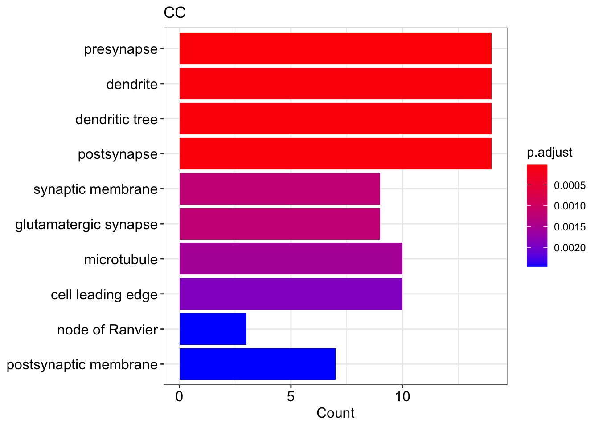
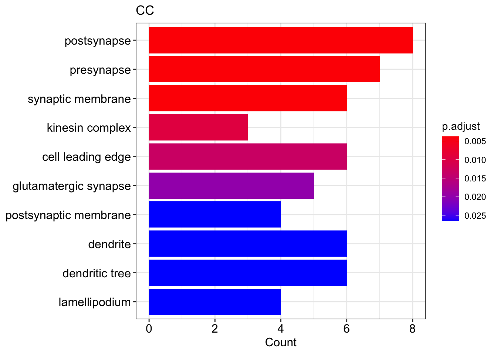

Chapter 3 GO and KEGG: common targets 05
3.1 Load the data
data_MAPP <- read.table("../data/inclusion_fractions_FG_COMMON_targets_09.tsv",
header = T)head(data_MAPP)3.2 Gene ontology (GO)
3.2.1 Prepare the gene list
genes <- data_MAPP %>% arrange(desc(ABSDIFF)) %>% dplyr::select(gene_id) %>%
unlist()
genes <- unlist(strsplit(genes, ","))head(genes)## gene_id1 gene_id2 gene_id3 gene_id4 gene_id5
## "ENSG00000136153" "ENSG00000108262" "ENSG00000129195" "ENSG00000173210" "ENSG00000131089"
## gene_id6
## "ENSG00000054523"3.2.2 Biological process (BP)
type_of_GO = "BP"
assign(paste0("GO_", type_of_GO), enrichGO(
genes,
organismDB,
keyType = "ENSEMBL",
ont = type_of_GO,
pvalueCutoff = pvalueCutoff,
minGSSize = minGSSize,
pAdjustMethod = "BH",
universe = universe,
readable = TRUE))
df_GO <- eval(parse(text = paste0("GO_", type_of_GO)))if(nrow(df_GO) > 0){
DT::datatable(df_GO@result %>% filter(p.adjust < 0.1), options = list(scrollX = TRUE))
} else "no GOs were found"## [1] "no GOs were found"if(nrow(df_GO) > 0){
barplot(df_GO, showCategory = showCategory,
title = type_of_GO)
} else "no GOs to plot"## [1] "no GOs to plot"3.2.3 Molecular function (MF)
type_of_GO = "MF"
assign(paste0("GO_", type_of_GO), enrichGO(
genes,
organismDB,
keyType = "ENSEMBL",
ont = type_of_GO,
pvalueCutoff = pvalueCutoff,
minGSSize = minGSSize,
pAdjustMethod = "BH",
universe = universe,
readable = TRUE))
df_GO <- eval(parse(text = paste0("GO_", type_of_GO)))if(nrow(df_GO) > 0){
DT::datatable(df_GO@result %>% filter(p.adjust < 0.1), options = list(scrollX = TRUE))
} else "no GOs were found"if(nrow(df_GO) > 0){
barplot(df_GO, showCategory = showCategory,
title = type_of_GO)
} else "no GOs to plot"
3.2.4 Cellular component (CC)
type_of_GO = "CC"
assign(paste0("GO_", type_of_GO), enrichGO(
genes,
organismDB,
keyType = "ENSEMBL",
ont = type_of_GO,
pvalueCutoff = pvalueCutoff,
minGSSize = minGSSize,
pAdjustMethod = "BH",
universe = universe,
readable = TRUE))
df_GO <- eval(parse(text = paste0("GO_", type_of_GO)))if(nrow(df_GO) > 0){
DT::datatable(df_GO@result %>% filter(p.adjust < 0.1), options = list(scrollX = TRUE))
} else "no GOs were found"if(nrow(df_GO) > 0){
barplot(df_GO, showCategory = showCategory,
title = type_of_GO)
} else "no GOs to plot"
3.3 KEGG
3.3.1 Prepare the the data
# select gene_id in ENSEMBL format and DIFF from the result table
DIFF <- data_MAPP %>% dplyr::select(gene_id, DIFF)
# rename the gene_id column
names(DIFF)[1] <- "ENSEMBL"
head(DIFF)
# create new df by converting ENSEMBL ID into ENTREZID and adding DIFF column
# sort table by in descending order by abs(DIFF)
genes_ENTREZ_df <- bitr(data_MAPP$gene_id, fromType = "ENSEMBL",
toType = "ENTREZID", OrgDb= organismDB) %>%
left_join(DIFF, by = "ENSEMBL") %>%
arrange(desc(abs(DIFF)))## 'select()' returned 1:1 mapping between keys and columns## Warning in bitr(data_MAPP$gene_id, fromType = "ENSEMBL", toType = "ENTREZID", : 3.03% of
## input gene IDs are fail to map...head(genes_ENTREZ_df )
# create a vector with DIFF values
genes_DIFF <- genes_ENTREZ_df$DIFF
genes_DIFF## [1] -0.8582215 -0.6760494 -0.5780755 -0.5733221 -0.4472303 -0.4208322 -0.4127889 -0.4079777
## [9] -0.3994337 -0.3216978 -0.2984512 -0.2894842 -0.2802866 -0.2797117 -0.2696532 -0.2621230
## [17] -0.2617458 -0.2542323 -0.2082776 -0.2082300 -0.2070782 -0.2067205 -0.1968178 -0.1718987
## [25] -0.1647432 -0.1531746 -0.1529033 -0.1251844 -0.1157782 -0.1140892 -0.1125992 -0.1084042# add names based on ENTREZID
names(genes_DIFF) <- genes_ENTREZ_df$ENTREZID
genes_DIFF## 4008 28964 54478 22885 23229 23095 92840 490
## -0.8582215 -0.6760494 -0.5780755 -0.5733221 -0.4472303 -0.4208322 -0.4127889 -0.4079777
## 2036 53826 57646 3778 9659 57706 55627 54413
## -0.3994337 -0.3216978 -0.2984512 -0.2894842 -0.2802866 -0.2797117 -0.2696532 -0.2621230
## 55054 818 55614 115704 288 55605 6249 29959
## -0.2617458 -0.2542323 -0.2082776 -0.2082300 -0.2070782 -0.2067205 -0.1968178 -0.1718987
## 9650 54462 23139 152926 25829 2801 84167 54808
## -0.1647432 -0.1531746 -0.1529033 -0.1251844 -0.1157782 -0.1140892 -0.1125992 -0.10840423.3.2 run KEGG
KEGGresults <- enrichKEGG(
names(genes_DIFF),
organism = "hsa",
keyType = "ncbi-geneid",
pvalueCutoff = 0.1,
pAdjustMethod = "BH",
universe = as.character(na.omit(ENTREZ_universe)),
use_internal_data = FALSE
)
KEGGresults## #
## # over-representation test
## #
## #...@organism hsa
## #...@ontology KEGG
## #...@keytype ncbi-geneid
## #...@gene chr [1:32] "4008" "28964" "54478" "22885" "23229" "23095" "92840" "490" "2036" "53826" ...
## #...pvalues adjusted by 'BH' with cutoff <0.1
## #...3 enriched terms found
## 'data.frame': 3 obs. of 9 variables:
## $ ID : chr "hsa04970" "hsa04911" "hsa04972"
## $ Description: chr "Salivary secretion" "Insulin secretion" "Pancreatic secretion"
## $ GeneRatio : chr "2/11" "2/11" "2/11"
## $ BgRatio : chr "39/4336" "41/4336" "43/4336"
## $ pvalue : num 0.00412 0.00455 0.00499
## $ p.adjust : num 0.0849 0.0849 0.0849
## $ qvalue : num 0.0718 0.0718 0.0718
## $ geneID : chr "490/3778" "3778/818" "490/3778"
## $ Count : int 2 2 2
## #...Citation
## T Wu, E Hu, S Xu, M Chen, P Guo, Z Dai, T Feng, L Zhou, W Tang, L Zhan, X Fu, S Liu, X Bo, and G Yu.
## clusterProfiler 4.0: A universal enrichment tool for interpreting omics data.
## The Innovation. 2021, 2(3):100141